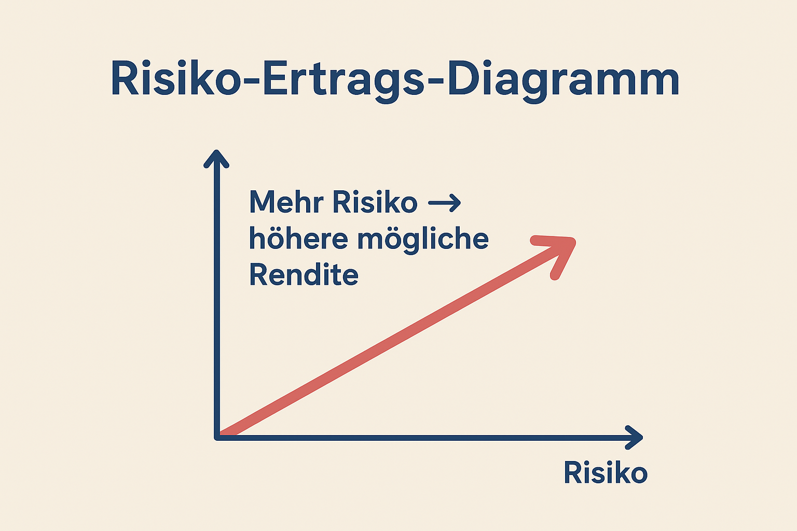

3 Was Risiko wirklich bedeutet
(und warum es dich nicht erschrecken muss)
3.1 Warum das Wort „Risiko“ einen schlechten Ruf hat
Wenn Menschen das Wort Risiko hören, denken viele sofort an Gefahr, Verlust und Unsicherheit.
Bei Geld klingt das nach „Ich könnte alles verlieren“ oder „Das ist mir zu gefährlich“.
Doch im wissenschaftlichen, finanziellen Sinn bedeutet Risiko etwas anderes.
Es ist kein Monster, das im Dunkeln lauert, sondern eher ein Wetterbericht:
Er sagt dir, wie stark es stürmen kann – nicht, dass es immer stürmt.
Wenn du Risiko verstehst, kannst du lernen, damit umzugehen – so wie Surfer Wellen lesen oder Piloten Turbulenzen einkalkulieren.

3.2 Schwankungen sind normal – und sogar notwendig
Im Alltag ist Risiko allgegenwärtig – du gehst täglich über die Straße, fährst Fahrrad, entscheidest dich, ob du einem Freund Geld leihst oder nicht.
Jede dieser Handlungen hat ein Risiko: eine Chance, dass etwas anders ausgeht als erwartet.
Beim Investieren ist das genauso.
Der Wert deines Portfolios bewegt sich – manchmal nach oben, manchmal nach unten.
Diese Schwankung nennt man Volatilität.
Viele Einsteiger/-innen interpretieren Schwankungen als Fehler – „Oh nein, mein ETF ist um 5 % gefallen!“ – aber in Wahrheit sind sie das Atmen des Marktes.
Ohne Schwankung gäbe es keine Rendite.
Warum?
Weil Rendite die Belohnung für Risiko ist.
Wer bereit ist, Schwankungen auszuhalten, wird mit langfristigem Wachstum entlohnt.
3.3 Ein kleines Gedankenexperiment
Stell dir vor, du sitzt an einem Strand.
Die Wellen rollen regelmäßig heran.
Manchmal sind sie hoch, manchmal niedrig.
Wenn du nah am Ufer bist, kann es dich kurz nass machen, aber du weißt: Nach der Welle kommt wieder Ruhe.
So funktionieren auch Märkte:
Kurzfristige Schwankungen sind wie Wellenbewegungen – mal rauschen sie lauter, mal leiser, aber das Meer bleibt dasselbe.
Wer beim ersten Wellenschlag flüchtet, kommt nie weit hinaus.
Wer aber versteht, dass jede Welle Teil eines langen Zyklus ist, kann gelassen bleiben und davon profitieren.
3.4 Die Achterbahn des Geldes

Die Börse fühlt sich manchmal wie eine Achterbahn an: rauf, runter, wieder rauf.
Das Tagesgeschäft kann nervös machen – Breaking News, Tweets, Krisenberichte.
Doch betrachte den Weg des ruhigen Zuges:
Er fährt stetig und sicher, aber langsam.
Nach fünf Minuten ist er vielleicht erst 200 Meter weit gekommen – stabil, aber langweilig.
Die Achterbahn dagegen ging vielleicht einmal steil hinunter, aber am Ende ist sie auf einem höheren Plateau.
Langfristig gesehen erreichen die Achterbahnfahrenden also mehr Aussicht, mehr Rendite – aber dafür mussten sie Nervenkitzel aushalten.
Von außen betrachtet: Der Unterschied zwischen Sparbuch und Aktienmarkt ist nicht gut oder schlecht, sondern eine Wahl zwischen Stabilität und Wachstum.
Wer Rendite will, muss Schwankungen akzeptieren.
Wer keine Schwankung will, bekommt meist keine Rendite.
3.5 Was Risiko in der Finanzwissenschaft bedeutet
In der Fachsprache beschreibt Risiko, wie sehr Ergebnisse von deinem erwarteten Wert abweichen können.
Es ist also eine Messung der Unsicherheit.
Ein Beispiel:
Wenn du 100 Euro investierst und weißt genau, dass du in einem Jahr 103 Euro bekommst – dann ist das Risiko = null (eine Festgeldanlage).
Wenn du aber 100 Euro in Aktien investierst, könnten es 120 Euro – oder 80 Euro – sein.
Mehr Streuung = mehr Risiko.
Aber: Mit dieser Streuung kommt auch die Chance nach oben.
Ohne Risiko entfällt die Möglichkeit auf überdurchschnittliche Erträge.
Ganz ohne Formeln, kann man sich Risiko so vorstellen wie den Ausschlag eines Pendels:
Je weiter es ausschlägt, desto heftiger die Bewegung – aber auch desto größer die Reichweite.

3.6 Risiko ist kein Feind, sondern der Preis fürs Mitspielen
Beim Investieren zahlst du mit Geduld und Gelassenheit – das ist der „Preis“ für Rendite.
Die meisten Menschen fürchten Risiko, weil sie kurzfristig denken.
Doch langfristig gleicht sich vieles aus.
Denke an eine Bergwanderung:
Wenn du jeden Schritt einzeln bewertest – mal rutschst du, mal musst du stehen bleiben – wirkt der Weg chaotisch.
Erst mit Abstand siehst du: Du bist stetig berghoch gegangen, auch wenn es zwischendurch unruhig war.
So auch an der Börse:
Grafisch wirken die Märkte wie Zickzackmuster, doch die Linie zeigt über Jahrzehnte meist nach oben.
Statistiken (z. B. historische Aktienmarktentwicklungen der OECD) zeigen:
👉 1‑Jahres‑Zeitraum: hohe Schwankungen, teils Verluste
👉 10‑Jahres‑Zeitraum: deutlich stabiler
👉 20‑Jahres‑Zeitraum: kaum negative Renditen Zeit ist also dein bester Risikopuffer.
3.7 Wie du Risiko verstehen und steuern kannst
1. Lange Anlagedauer:
Je länger du investiert bleibst, desto geringer ist das kurzfristige Risiko.
Zeithorizont glättet Ausschläge.
2. Diversifikation:
Verteile dein Geld auf verschiedene Anlageformen (Aktien, Anleihen, Regionen).
Wenn eine Welle hochschwappt, gleicht eine andere sie aus.
So entsteht Stabilität – wie ein gut gemischtes Musik‑Set aus verschiedenen Genres.
3. Stetiges Nachkaufen:
Wer regelmäßig (z. B. mit einem ETF‑Sparplan) investiert, kauft automatisch mal teuer, mal günstig.
Dieser Durchschnittseffekt reduziert Risiko.
4. Keine Panikverkäufe:
Das wohl größte Risiko ist nicht im Markt, sondern im eigenen Verhalten.
Wer in Krisen verkauft, realisiert Verluste.
Wer ruhig bleibt, lässt Zeit für Erholung.
3.8 Die Psychologie des Risikos
Das Gehirn nimmt Verluste doppelt so stark wahr wie Gewinne.
Dieser Mechanismus stammt aus der Evolution – Verlustvermeidung war überlebenswichtig.
Heute führt dieselbe Angst zu Fehlentscheidungen:
👉 Panikverkäufe bei Kurseinbrüchen
👉 Übervorsicht und dadurch verpasste Renditen Der Schlüssel liegt darin, die Emotion zu erkennen, nicht zu ignorieren.
Wenn du verstehst, dass Kursrückgänge normal sind, verlierst du die Angst davor.
Ein Profi‑Trick:
Schau weniger oft auf dein Depot.
Je seltener du hinblickst, desto ruhiger wirkt die Linie.
Wer täglich kontrolliert, erlebt jede kleine Welle – wer jährlich schaut, sieht den Aufwärtstrend.
3.10 Die Balance zwischen Risiko und dich
Jede Person hat ihre eigene „Risikotoleranz“.
Das ist wie ein persönlicher Kompass.
Manche schlafen ruhig, auch wenn ihr Depot schwankt, andere nicht.
Das Ziel ist nicht, Risiko zu vermeiden, sondern das richtige Maß für sich zu finden.
Wenn du nachts ruhig schlafen kannst, ist dein Risiko richtig eingestellt.
Es geht also nicht um „mutig oder ängstlich“, sondern um passend.
Das ist die Grundlage deines künftigen Investitionsplans.
3.11 Motivation durch Perspektive
Wann immer Märkte fallen, erinnere dich:
Du besitzt keine Zahlen auf einem Bildschirm, sondern Anteile an realen Unternehmen – Menschen, Produkte, Ideen, Technologien.
Diese verschwinden nicht von heute auf morgen.
Wenn die Kurse fallen, wird nur ihre Bewertung angepasst, nicht ihr Wert an sich.
So wie Modeschwankungen: Heute ist Trendfarbe Blau out, morgen wieder in.
Wer an realen Werten festhält, bleibt gelassen.
3.12 Was du aus diesem Kapitel mitnehmen solltest
👉 Risiko = Streuung, nicht Gefahr.
👉 Ohne Risiko keine Rendite – es ist der Preis des Erfolgs, nicht sein Gegner.
👉 Schwankungen sind normal: Märkte atmen.
👉 Zeit, Geduld und Diversifikation sind deine Schutzschilde.
👉 Verhaltensrisiko (Panik, Gier) ist gefährlicher als Marktrisiko.
👉 Du musst nur das Risiko tragen, mit dem du leben kannst. 3.13 Zum Nachdenken
„Ein Schiff im Hafen ist sicher.
Aber dafür sind Schiffe nicht gebaut.“
— John A. Shedd
Investieren heißt, hinauszufahren – nicht stürmisch, sondern vorbereitet.
Dein Wissen ist der Kompass, dein Zeithorizont das Segel.
3.14 Ausblick
Im nächsten Kapitel lernst du, wie das Zusammenspiel von Risiko und Rendite funktioniert – also, wie dein Geld für dich arbeiten kann.
Du wirst sehen: Wenn du Risiko richtig verstehst, wird es zum Verbündeten deines finanziellen Wachstums.